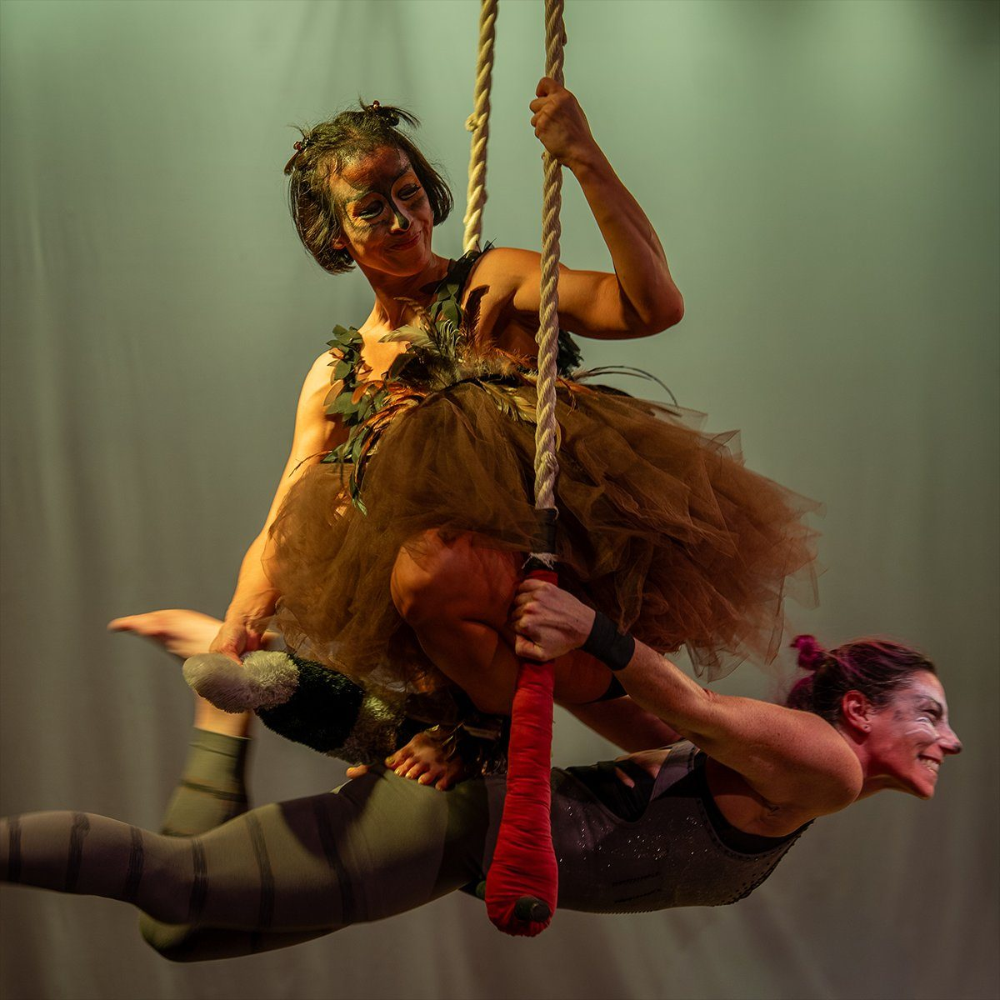
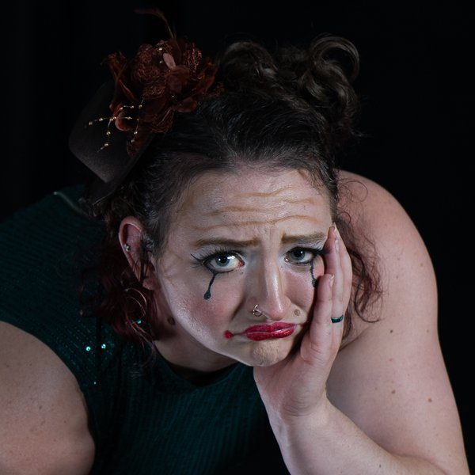
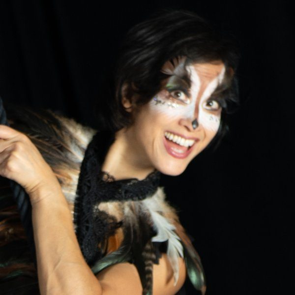
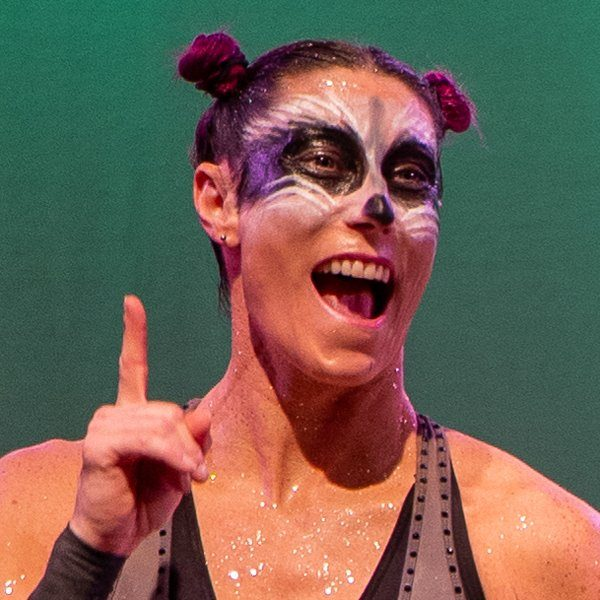
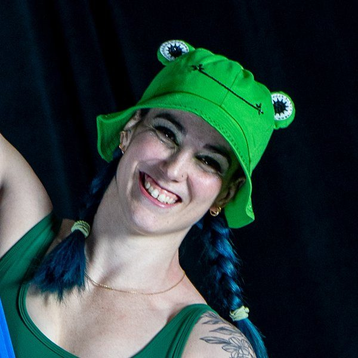

A live circus performance art collective based in Virginia
Squonk & Friends was created in 2025 to fill a need for artistic expression and entertainment in the DMV area. Looking to tell a story that would both captivate and inspire audiences, the show Squonk & Friends was born.
Squonk & Friends is a family-friendly circus show that includes many circus skills including duo silks, handbalancing, lyra, straps, partner acrobatics, rope, and plenty of silly antics. The show follows a woodland cryptid named Squonk that is allegedly found in the hemlock forests of Pennsylvania. This little creature believes they are so ugly and can dissolve into a puddle of tears if they are perceived.
Throughout the show, Squonk’s three friends, Owl, Raccoon, and Frog try everything in their power to cheer up Squonk. Following these four unlikely friends, the show tackles topics of comfort, self-acceptance, and sitting with grief.

Our mission is to provide entertainment and joy that reaches audiences of all ages, backgrounds, and communities.
A commitment to making shows that are accessible to all.
To reach and enrich the local community.
To provide entertainment that brings joy, sparks meaningful connection, and utilizes artistic skills.
To captivate and inspire our audience to create and move with joy.
The artists and makers behind every Squonk production.

Rachel is a professional performer, coach, and certified personal trainer currently living in Virginia. Rachel grew up competing in USA Gymnastics which led her to the circus in high school. She co-founded a local circus troupe and was part of the New England Center for Circus Arts professional training program where she studied hand-balancing and aerial silks.

Cyndi is a movement professional and coach. She has been a movement lover for as long as she can remember and was introduced to circus in 2013. She practices trapeze, lyra, and duo partner work. Cyndi currently resides in Arlington with her husband and two teenagers.

Lindsay began her circus journey 8 years ago, and immediately fell in love with the community. She adores the strength, confidence and adventure the circus arts brings to each individual. Lindsay currently resides in Virginia with her husband and son.

Lizzy is a circus performer, coach, and personal trainer with a deep love for movement and live entertainment. With two decades of experience across multiple aerial disciplines, she has performed and coached at circus schools and productions throughout the U.S. and internationally.